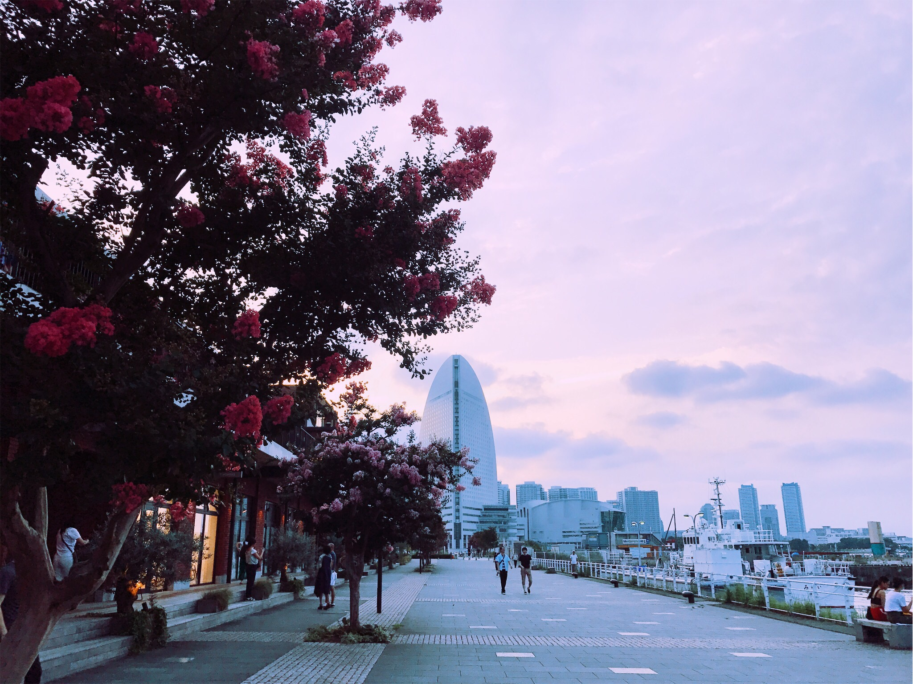
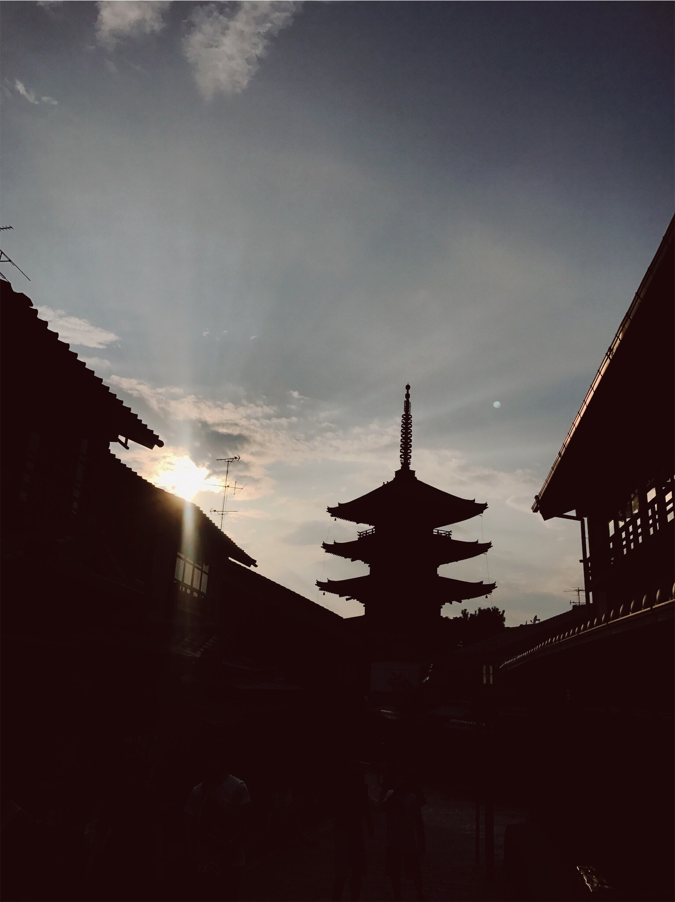
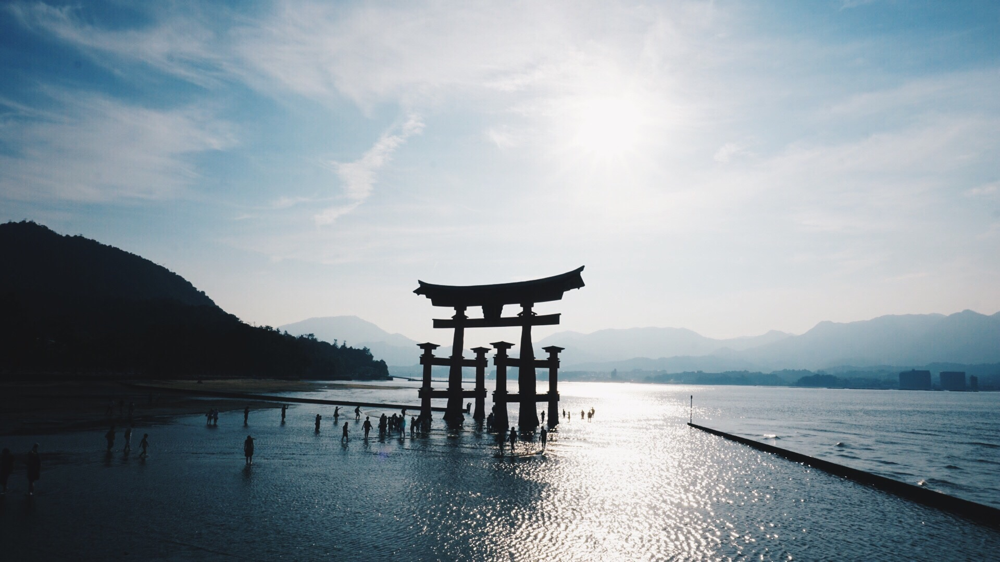

Intro
Japan is an archipelago located in East Asia that is made up of 6,852 islands.
There are four major islands:

This website explores four major cities: Yokohama, Kyoto, Tokyo, and Hiroshima, located on the islands of Honshu and Shikoku that are very popular for foreign tourists based on both their metropolitan and natural qualities.
Yokohama
Yokohama, a Japanese city south of Tokyo, was one of the first Japanese ports opened to foreign trade, in 1859. It contains a large Chinatown with hundreds of Chinese restaurants and shops. It’s also known for Sankei-en Garden, a botanical park containing preserved Japanese residences from different eras, and the seaside Minato Mirai district, site of the 296m Landmark Tower.
Kyoto
Kyoto, once the capital of Japan, is a city on the island of Honshu. It's famous for its numerous classical Buddhist temples, as well as gardens, imperial palaces, Shinto shrines and traditional wooden houses. It’s also known for formal traditions such as kaiseki dining, consisting of multiple courses of precise dishes, and geisha, female entertainers often found in the Gion district.
Tokyo

The Home of the 2020 Olympics. Tokyo, Japan’s busy capital, mixes the ultramodern and the traditional, from neon-lit skyscrapers to historic temples. The opulent Meiji Shinto Shrine is known for its towering gate and surrounding woods. The Imperial Palace sits amid large public gardens. The city's many museums offer exhibits ranging from classical art (in the Tokyo National Museum) to a reconstructed kabuki theater (in the Edo-Tokyo Museum).
Hiroshima
Hiroshima is known for its importance in bringing an end to World War 2. Other than the remains from the war that we can find at the Hiroshima memorials, there is alot of natural beauty that surrounds the area.
Itsukushima Shrine is a Shinto shrine on the island of Itsukushima, best known for its "floating" torii gate. It is in the city of Hatsukaichi in Hiroshima Prefecture in Japan